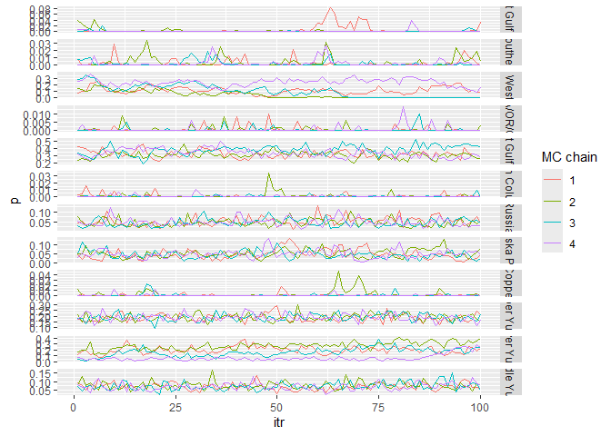

Ms.GSI is here to help you conducting multistage genetic stock identification. This package includes functions to setup input data, run the multistage model, and make summary statistics and convergence diagnostics. It also includes a function for making trace plots.
Installation
You can install the development version of Ms.GSI from GitHub with:
# install.packages("devtools")
devtools::install_github("boppingshoe/Ms.GSI", build_vignettes = TRUE)Example
This example shows the basic workflows for running a multistage model. First thing first, the background: we made up a scenario where we have samples for Chinook salmon bycatch from Bering Sea groundfish fisheries. The mixture sample contains Chinook from all over the North Pacific, but we are interested in contribution from the Yukon River. We will conduct GSI using a broad-scale baseline (base_templin) in combination with a regional baseline (base_yukon) in a multistage framework.
The fake Chinook data sets are pre-loaded in the Ms.GSI package. Here we prepare the input data:
library(Ms.GSI)
msgsi_dat <-
prep_msgsi_data(mixture_data = mix,
baseline1_data = base_templin, baseline2_data = base_yukon,
pop1_info = templin_pops211, pop2_info = yukon_pops50, sub_group = 3:5)
#> Compiling input data, may take a minute or two...
#> Time difference of 7.569319 secsUsing the prepared input data, we run the model with four chains of 150 iterations. In reality, you should of course run it with more iterations. We set the first 50 iterations in each chain as the warm-ups (not kept in the final output). Here’s the summary for the estimates and convergence diagnostics.
msgsi_out <- msgsi_mdl(msgsi_dat, nreps = 150, nburn = 50, thin = 1, nchains = 4)
#> Running model (and the category is... Femme Queen Vogue!)
#> Time difference of 1.685267 secs
#> April-21-2025 10:23
msgsi_out$summ_comb
#> # A tibble: 12 × 9
#> group mean median sd ci.05 ci.95 p0 GR n_eff
#> <chr> <dbl> <dbl> <dbl> <dbl> <dbl> <dbl> <dbl> <dbl>
#> 1 Russia 2.27e-2 1.91e-2 0.0213 8.31e-12 0.0634 0.11 1.35 102.
#> 2 Coastal West Alas… 9.83e-2 6.30e-2 0.110 1.21e-12 0.305 0.165 3.01 58.4
#> 3 North Alaska Peni… 1.33e-2 9.47e-4 0.0204 1.06e-15 0.0535 0.265 1.20 58.8
#> 4 Northwest Gulf of… 3.70e-1 3.72e-1 0.104 2.02e- 1 0.548 0 1.42 34.9
#> 5 Copper 7.05e-4 6.04e-7 0.00258 1.49e-20 0.00433 0.49 1.01 336.
#> 6 Northeast Gulf of… 5.48e-4 1.08e-6 0.00195 1.11e-19 0.00258 0.475 1.02 400
#> 7 Coastal Southeast… 1.51e-3 3.36e-6 0.00449 4.26e-18 0.00948 0.415 1.10 183.
#> 8 British Columbia 6.31e-4 9.65e-7 0.00191 1.03e-18 0.00384 0.455 1.08 278.
#> 9 WA/OR/CA 5.13e-4 8.51e-7 0.00158 3.24e-18 0.00288 0.492 1.04 371.
#> 10 Lower Yukon 2.42e-1 2.58e-1 0.136 3.23e- 2 0.447 0 2.37 103.
#> 11 Middle Yukon 7.03e-2 6.85e-2 0.0229 3.61e- 2 0.110 0 1.03 433.
#> 12 Upper Yukon 1.79e-1 1.81e-1 0.0339 1.29e- 1 0.244 0 1.03 468.There’s a function in the package to make trace plots and inspect mixing of chains.
tr_plot(obj = msgsi_out$trace_comb, pop_info = msgsi_out$comb_groups)
Details of the mathematical model of integrated multistage framework and instructions for using Ms.GSI package can be found in the “articles” tab of the package website. Or, once you installed Ms.GSI, you can call the article using vignette("msgsi_vignette").